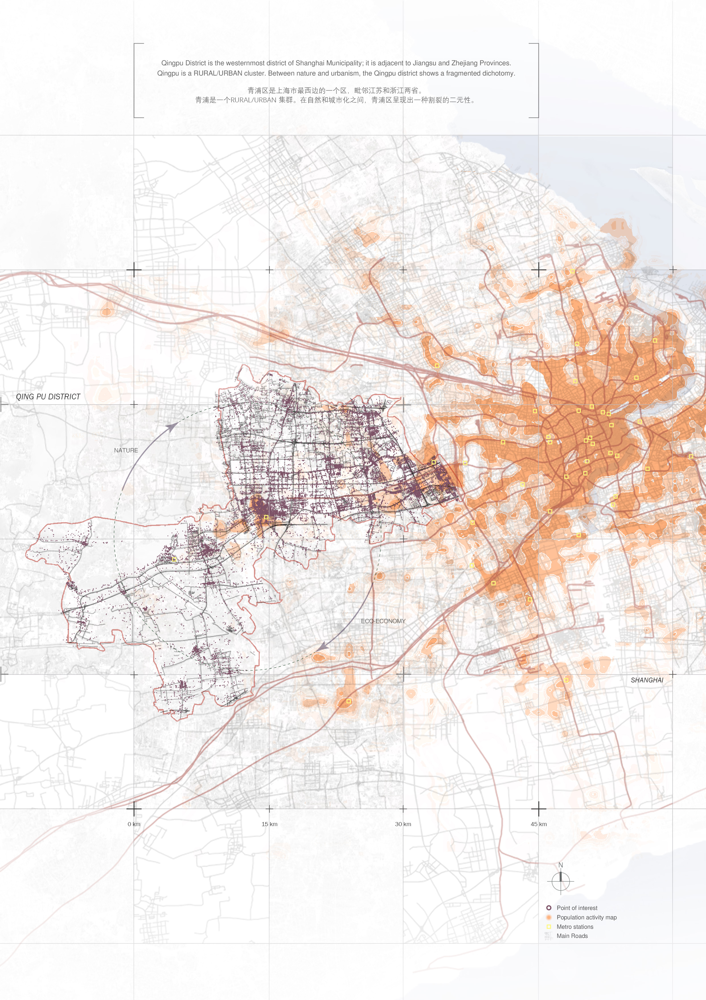

Segment4Solar v0.1
Tool for photovoltaic placement on facades, integrating solar data.

BIPV’s impact on outdoor comfort
A simulation-based study of photovoltaic facades and urban thermal environments.
Tool for photovoltaic placement on facades, integrating solar data.
A simulation-based study of photovoltaic facades and urban thermal environments.